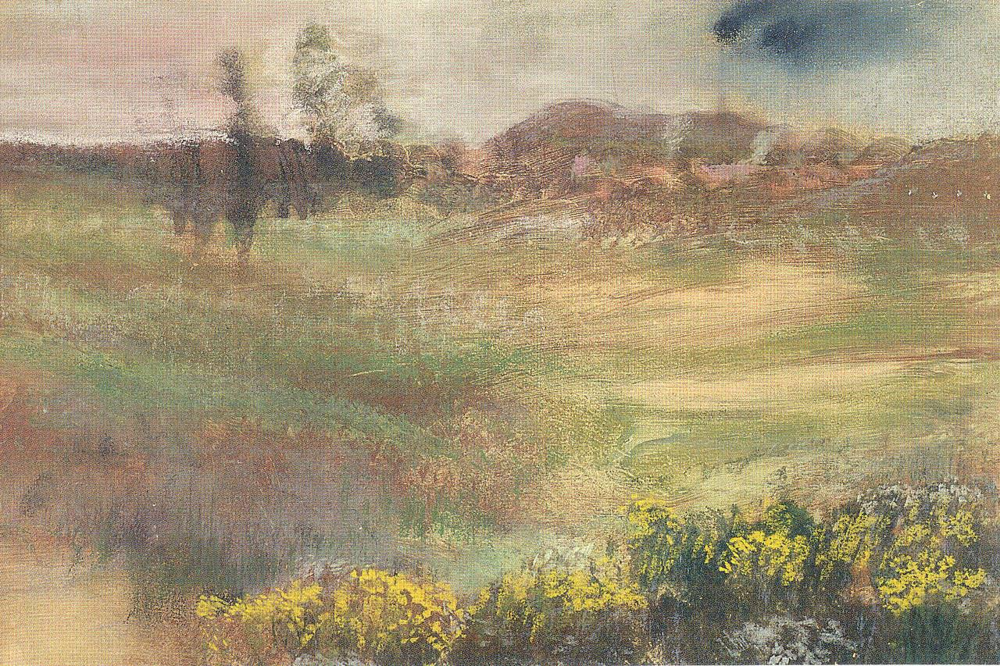

Илер-Жермен-Эдгар де Га (Эдгар Дега)
Paysage Avec Fumée de Cheminées (Пейзаж с дымовыми трубами), 1890-1893

Пастель поверх монотипии на текстурированной кремовой бумаге, наклеенной на картон, 31,7 x 41,6 см
Чикагский институт искусств, Чикаго.
Из коллекции художника, 1917 [штамп (Lugt 658), нижний левый угол выделен красным]; продано в галерею Жоржа Пети, Париж, 2–4 июля 1919 года, лот 45. Нуньес и Фике, Париж [Лемуан, 1946]. Л. Вольф, Гамбург [каталог аукциона в Париже, 1932]. Неизвестный частный коллекционер, до 1932 [хотя на аукционе 1932 года были представлены коллекции Саймона и Зильберберга, остаётся неясным, кому принадлежал этот конкретный лот. Это могли быть Саймон, Зильберберг или неизвестное третье лицо.]; продано в галерею Жоржа Пети, Париж, 9 июня 1932 г., лот 5, доктору Хельмуту Лютьенсу, директору амстердамского отделения Пауля Кассирера, для Фридриха и Луизы Гутман, Хемстеде, Голландия [аннотированный каталог продажи получен от Вальтера Файльхенфельдта]; отправлено Фридрихом Гутманном Полю Граупе, Париж, 1939 г.; отправлено на склад Ваккер-Бонди на бульваре Распай к 1945 г. [письмо Артура Гольдшмидта о Пауле Граупе Фридриху Гутману]. Ганс Вендланд, Париж, своему зятю Гансу Фрицу Фанкхаузеру, Базель [Янис, 1968]; продан Гансом Фрицем Фанкхаузером Эмилю Вольфу, Нью-Йорк, 1951 [Янис, 1968]; продано Эмилем Вольфом через Марго Поллинс Шаб, Нью-Йорк, Дэниелу Сирлу, Уиннетка, Иллинойс., 1987; подарено Дэниелом Сирлом и продано семьей Гудман (ранее Гутман) Художественному институту в 1998 году. Дега наиболее известен своими изображениями балета и других сцен из современной городской жизни. Однако периодически он обращался к жанру пейзажа, например, во время поездки в 1869 году на побережье Нормандии, результатом которой стал ряд пастельных пейзажей. В годы расцвета импрессионизма - в 1870-е и 1880-е годы, когда пейзаж безраздельно господствовал во французском авангарде, - Дега, как известно, испытывал отвращение к пейзажной живописи под открытым небом. Однако в 1890-х годах он создал несколько групп пейзажей, различными способами сочетая наблюдение и изобретательность. Возобновившийся интерес художника был вызван его поездкой по Бургундии в 1890 году, которая вдохновила его на создание пейзажа в технике монотипии. Монотипия создается путём рисования изображения жирными типографскими чернилами на металлической пластине, а затем печати этой пластины на листе бумаги. Обычно с фотопластинки можно получить только один яркий оттиск; иногда можно получить и второй, более бледный оттиск, известный как монотипический рисунок. Дега иногда писал пастелью поверх монотипий или монотипических изображений, например, на картине "Пейзаж с дымовыми трубами". Он впервые применил эту технику в 1870-х годах. Некоторые из своих монотипий он начал писать на месте, в то время как другие - например, пейзаж с дымовыми трубами - были воспоминаниями. Безусловно, цель Дега при создании таких композиций сильно отличалась от стремления его коллеги Клода Моне к изменению атмосферных эффектов. Хотя пейзажи памяти Дега основаны на памяти, они задумчивы и таинственны.
Источник: https://www.artic.edu/artworks/151507/landscape-with-smokestacks